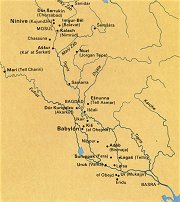
Mezopotámie neboli Meziříčí se rozkládala mezi asijskými řekami Eufrat a Tigris. Na rozdíl od starověkého Egypta nešlo o jednu říši, ale spíše o oblast, ve které se zrodila řada starověkých států. Civilizace, které vznikly na území Mezopotámie, měly hodně společného a vzájemně se ovlivňovaly. Proto můžeme mluvit o této oblasti jako o jistém celku. Nejvýznamnějšími starověkými státy na tomto území byly Sumer, Akkad, Babylon a Asýrie.
Potopa světa
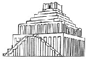
Babylonská věž (rekonstrukce)
|
MEZOPOTÁMIE
Kdo by neznal biblické příběhy o stavbě Babylonské věže nebo potopě světa! Díky nim nebyly civilizace, které vznikly na území Mezopotámie, nikdy zapomenuty, i když se řada vědců domnívala, že jde o pouhé pohádky… Až archeologické nálezy ukázaly, že skutečnost někdy bývá zázračnější než pohádka – Babylonská věž nebyla jedinečná, podobné věže (vlastně chrámy, kterým říkáme zikkuraty) tvořily dominantu každého většího města, a přestože nesahaly až k nebesům, dodnes stojíme v úžasu, jak mohli naši předkové tyto stavby vytvořit. Dalším překvapením bylo rozluštění klínopisných tabulek, které obsahovaly řadu biblických příběhů, ovšem z doby tisíc let před vznikem Bible! Kromě nich se z říše zapomnění vrátily na světlo starověké zákoníky, hymny opěvující bohy, různá zaříkadla, didaktické texty a hlavně nejstarší eposy.
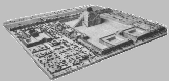
Babylonská věž a její okolí (rekonstrukce)
Potopa světa
Mýtus o potopě světa nacházíme nezávisle po celém světě. Najdeme ho nejen v Bibli, ale také ve vyprávěních Mayů, Číňanů, Indů, Řeků, Germánů atd. Zřejmě nejstarší verze příběhu o potopě světa vznikla v Sumeru (26. stol. př.n.l.). Je to zlomek klínopisné tabulky, který pojednává o králi a knězi Ziusudrovi (toto jméno by se dalo přeložit jako Život dlouhých dnů). Bohužel se z něj nedozvíme, proč k potopě došlo. Víme jen to, že po potopě, která trvala 7 dní a nocí, Ziusudra opustil svůj člun, obětoval bohům a ti ho obdařili věčným životem v Dilmunu (sumerská obdoba ráje).
|
Historie
Sumerové osídlili toto území ve 4. tisíciletí př.n.l. a založili tu první městské státy. Následovala akkadská říše (2350-2150 př.n.l.), staroasyrská (1950-1750 př.n.l.) a starobabylonská (1894-1594 př.n.l.) říše, středoasyrská říše (1390-1080 př.n.l.), novoasyrská (930-605 př.n.l.) a novobabylonská (626-538 př.n.l.) říše. V roce 538 př.n.l. dobyli Babylon Peršané, v roce 331 př.n.l. je porazil Alexandr Makedonský a od roku 633 n.l. do dnešních časů ovládají toto území Arabové.
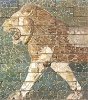
Zvířata z glazovaných cihel lemovala Procesní cestu, která vedla od Ištařiny brány přes celý Babylon až k zikkuratu.
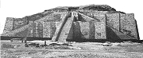
Rozvaliny zikkuratu v Uru
|
Epos o Atrachasísovi
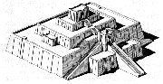
Rekonstrukce zikkuratu v Uru
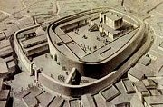
Uruk, rekonstrukce
|
Když bohové ještě byli lidmi (1630 př.n.l.)
Stejný námět převzali Babyloňané do svého eposu, který začíná slovy Když bohové ještě byli lidmi (Inúma ilú awílum). Hlavní postavou tohoto nejstaršího mezopotamského eposu ze 17. stol. př.n.l. je král Atrachasís (toto jméno by se dalo přeložit jako Přemoudrý), který opět přežije potopu. Tentokrát je ale vypravování daleko obšírnější. První část eposu zachycuje těžký život bohů, kteří museli 2500 let ve dne v noci pracovat jako kopáči. Rozhodli se tedy stvořit člověka, aby tuto těžkou práci dělal za ně. Bohové zabili boha Geštuge, jeho maso a krev smísili s hlínou a člověk byl na světě! Po mnoha letech se ale lidstvo příliš rozmnožilo a začalo svým řevem rušit boha větru Enlila. Ten na lidstvo seslal řadu morových ran, aby měl klid, ale díky bohovi země Enkimu, který vždy poradil Atrachasísovi, co má udělat, lidé vše přežili. Posledním zásahem bohů, který měl lidstvo zcela vyhladit, byla potopa. Enki ale opět Atrachasísovi pomohl. Skrze rákosovou stěnu mu poradil, jak postavit loď, ve které potopu přečká, a tak se i stalo. Když Enlil zjistil, že lidstvo opět přežilo, nejdříve se rozzlobil, ale nakonec se rozhodl, že dá světu nový řád a napříště už žádný pokus o jeho zničení neučiní.
|
Jak to bylo s potopou?
Obyvatelé Mezopotámie tradičně dělili svoje dějiny na epochu před potopu a po potopě, čímž oddělovali vlastně období mýtické od historického. Předpotopní králové se prý dožívali úctyhodného věku (např. „pastýř" Dumuzi vládl 36000 let), ale i těsně po potopě měli panovníci velmi tuhý kořínek (známý král Gilgameš vládl podle tradice 126 let). Zajímavější je ale problém, zda k potopě opravdu došlo. Archeologické vykopávky potvrzují období velkých záplav (vrstvy bahna), které se ovšem týkají pouze této oblasti. Potopa celého světa tedy v této době určitě nenastala.
|
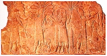
Asyrský reliéf
|
|
Jak probíhala potopa světa podle Indů, Číňanů, Řeků, Germánů a Mayů?
Nalistuj si v Bibli příběh o Noemově arše a srovnej ho s vyprávěním o Ziusudrovi, Atrachasísovi nebo Utanapištimovi.
Proč se podle Bible objevuje na obloze duha?
|
Epos o Gilgamešovi
Příběh o potopě světa najdeme i v nejvýznamnějším mezopotamském eposu, který vypráví o králi Gilgamešovi. Jednotlivé příběhy o tomto bájném vládci města Uruku se tradovaly od nejstarších sumerských dob. Později byly spojeny do uceleného eposu o hledání nesmrtelnosti a na příkaz asyrského krále Aššurbanipala (668-630 př.n.l.) došlo k jejich zapsání na 12 hliněných tabulek pro jeho knihovnu v Ninive. Celý epos má přibližně 3000 veršů, ale protože byl původně recitován zpaměti, řada pasáží se v textu několikrát opakuje.
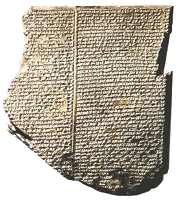
Toto je 11. tabulka Eposu o Gilgamešovi, která zachycuje vyprávění o potopě světa. Stejně jako většina nalezených hliněných tabulek není ani tato kompletní.
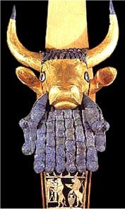
Harfa z Mezopotámie
|
Epos o Gilgamešovi (2. tis. př.n.l.)
Gilgameš byl synem bohyně Ninsun a krále Lugalbandy. Tento vládce města Uruku utlačoval své poddané tak, že jejich nářek dolehl až k uším bohů. Ti se rozhodli, že stvoří divokého člověka Enkidua, který Gilgameše pokoří, ale vše dopadne jinak. Gilgameš se s Enkiduem spřátelí a společně se oba vrhají do různých dobrodružství. Zabijí netvora Chuvavu, vykácejí jeho cedrový les a zabijí nebeského býka, kterého na Uruk seslala bohyně Ištar, protože Gilgameš neopětoval její lásku. Tato tažení doprovázejí různé věštecké sny. V jednom z nich se Enkiduovi zdá, že bude za své činy potrestán smrtí. Enkidu opravdu umírá a zdrcený Gilgameš truchlí nad smrtí nejlepšího přítele. Náhle si uvědomuje, že i on je smrtelný, a proto se vydává na dlouhou cestu za Utanapištimem, který přežil potopu světa a získal od bohů nesmrtelnost. Gilgameš musí projít řadou zkoušek. Vstupuje do horské brány, kterou hlídají podivné bytosti – napůl lidé a napůl škorpióni. Následuje dlouhá cesta v strašlivé temnotě. Potom se setkává s božskou šenkýřkou Siduri, která mu radí, aby se hlavně veselil a hodně jedl, ale i v této zkoušce obstojí. Navštíví Utanapištimova lodivoda a oba se vydávají na voru přes vody smrti. Už už je Gilgameš u cíle. Nesmrtelnost je na dosah ruky. Bohužel ale poslední úkol nesplní. Nevydrží být vzhůru 6 dní a nocí, a když mu dá Utanapištim (toto jméno by se dalo přeložit jako Nalezl život) ještě jednu šanci, opět selže. Gilgameš ze dna moře vyloví rostlinu nesmrtelnosti, jejíž jméno zní „Mladým stává se stařec", ale tu mu ukradne had. A tak se smutný Gilgameš vrací zpět do Uruku. Jeho příběh končí tam, kde začal – král obhlíží nádherné hradby, kterými dal obehnat své město.
Gilgameš a strom chuluppu: Tento příběh se nachází na posledních dvou tabulkách Eposu o Gilgamešovi jakožto určitý dodatek. Bohyně Inanna pečuje o dub, který zachránila z řeky Eufratu. Když strom chuluppu vyrostl, usadil se u jeho kořenů had, v koruně Anzu (pták bouře s hlavou lva) a přímo v kmeni se zabydlela divoženka. Inanna se jich nemůže zbavit, a proto požádá Gilgameše o pomoc. Ten hada zabije, načež pták i se svými mláďaty uletí a víla raději uteče pryč. Hrdina mohutný strom porazil a Inanna z něj vyrobila pro sebe trůn a postel a pro Gilgameše buben s paličkami. Gilgamešovi ale spadne buben do podsvětí. Posílá za ním svého přítele Enkidua, který se už nesmí nikdy vrátit zpět. Smutný Gilgameš si alespoň vyprosí, aby Enkiduova duše mohla opustit podsvětí, a rozmlouvá s ní.
|
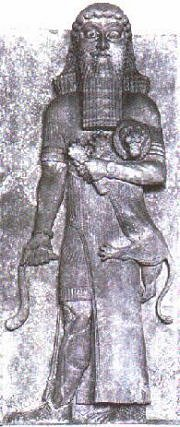
Ve zlomku Gilgameš a Agga dojde ke střetu mezi Gilgamešem a králem Aggou z Kiše, který si chce podrobit Uruk. Gilgameš ho ale porazí a naopak se mu podaří dobýt město Kiš.
O čem pojednává ukázka?
Zamysli se nad tím, jak může člověk dosáhnout nesmrtelnosti.
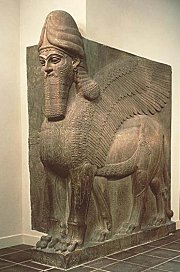
V Mezopotámii se našly obrovské sochy okřídlených býků a lvů s lidskou hlavou.
|
Když nahoře
Slovy Enúma eliš (Když nahoře) začíná další významný epos, který vznikl za vlády krále Chammurapiho (1792-1750 př.n.l.). Tento panovník proslul hlavně tím, že vydal první zákoník, ale zároveň to byl i velký válečník. Dobyl četná území a učinil z Babylonu sídelní město nové říše. Hlavním bohem města Babylon byl Marduk, z hlediska celé Mezopotámie šlo ovšem o zcela bezvýznamné božstvo. Aby se tento bůh mohl stát důstojným reprezentantem celé říše, vznikl epos Enúma eliš, jehož hlavním námětem je vítězství Marduka nad starými bohy.
|
Enúma eliš (2. tis. př.n.l.)
Podle tohoto mýtu vznikli bohové tak, že se spojily vody sladkovodního oceánu (bůh Apsú) a slaného moře (bohyně Tiámat). Noví bohové ale Apsúa rušili neustálým hlukem, a proto se je rozhodl zničit. Bůh Ea se rozhodl ostatní bohy zachránit. Apsúa zabil a postavil se na jeho místo. Vdova Tiámat toužila po odplatě. Stvořila obrovské vojsko, které mělo odbojné bohy pokořit. Zprvu se nechtěl žádný bůh tomuto vojsku postavit, až Eův syn Marduk slíbil, že pokud bude zvolen nejvyšším bohem, pokusí se bohyni Tiámat porazit. A tak se také stalo. Marduk bohyni zabil a z jejího těla stvořil nebesa a zemi. Vojevůdce Kingu byl obětován a bůh Ea z jeho krve stvořil člověka. Ostatní bohové, kteří se proti Mardukovi postavili, dostali milost. Z vděčnosti mu vystavěli nové město Babylon, kde potom svorně přebývali všichni bohové.
Matka Chubur, která vše tvoří,
přichystala zbraně, jimž vzdorovati nelze, stvořila hady
s ostrými zuby, nemilosrdnými tesáky.
Místo krve naplnila jejich těla jedem.
Zuřivé draky oděla hrůzou.
Božskou je obdařila září, naroveň postavila bohům.
Stvořila hada jedovatého, saň a mořskou obludu,
obrovského lva, vzteklého psa, člověka-škorpióna,
zuřivé vichry, člověka-rybu, tura.
Nemilosrdné zbraně nesou, nebojí se bitvy.
|
|
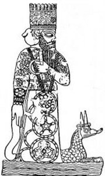
Bůh města Babylonu Marduk se stal díky eposu Enúma eliš božstvem celé říše. Jeho chrám esagila byl pověstnou Babylonskou věží.
Nakresli ilustraci k této ukázce.
|
Chammurapiho zákoník
1. Jestliže někdo někoho obvinil a uvrhl naň podezření z vraždy, avšak neusvědčil jej, bude ten, kdo ho obvinil, usmrcen.
195. Jestliže dítě udeřilo svého otce, uříznou mu jeho ruku.
196. Jestliže plnoprávný občan vyrazil oko plnoprávnému občanovi, vyrvou mu oko.
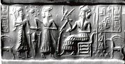
Otisk pečetidla
|
Jazyk a písmo
Na území Mezopotámie se ve starověku mluvilo různými jazyky. Nejzáhadnějším z nich je sumerština. Tento jazyk se dosud nepodařilo zařadit k žádné známé rodině jazyků, ale nakonec byly sumerské klínopisné tabulky rozluštěny. Sumerština se brzy stala mrtvým jazykem, protože noví dobyvatelé Mezopotámie mluvili akkadsky, nadále se však používala při bohoslužbách a v písařských školách. Akkadština patří k semitské jazykové rodině (je tedy příbuzná s arabštinou nebo hebrejštinou) a dělíme ji na asyrštinu a babylonštinu. Obyvatelé Mezopotámie zapisovali svoje texty klínovým písmem, které ryli rákosovým pisátkem na hliněné tabulky nebo ho tesali do kamene. Toto písmo, jehož počátky spadají do 4. tisíciletí př.n.l., prodělalo značný vývoj. Nejprve šlo o písmo obrázkové, kde znak znamenal zobrazované slovo (celkem šlo o 600 znaků), později se obrázky zjednodušovaly do krátkých a dlouhých vrypů (klínů), které mohly znamenat nejen celé slovo, ale také pouze jeho část (slabiku). Klínopis byl tedy v zásadě slabičným písmem, i když obsahoval řadu odchylek.
|
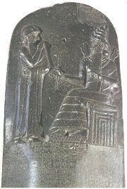
Chammurapiho zákoník
|
Rozluštění klínového písma
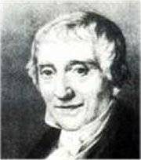
Georg Fridrich Grotefend
|
Rozluštění klínového písma
Základy k rozluštění klínopisu položil německý vědec Georg Fridrich Grotefend (1775-1853) v roce 1802. Byl to úkol skoro nadlidský, protože neměl k dispozici žádný dvoujazyčný text! Grotefend správně usoudil, že nápis, který má v ruce, je seznamem perských panovníků, a podařilo se mu odvodit významy opakujících se znaků. Na jeho práci navázali další vědci, především Angličan Henry Rawlinson [ról-] (1810-1895), který nejprve rozluštil perský a v roce 1851 také akkadský nápis na skále v Behistúnu (kromě zmíněných jazyků zde byl text nápisu také v elamštině). Sumerské klínové písmo rozluštil François Thureau-Dangin [tiro daže] (1872-1944) teprve v roce 1905. Klínové písmo převzaly i další národy mimo Mezopotámii (už byla řeč o Peršanech, kteří z něj vytvořili písmo hláskové). Pro nás je nejdůležitější písmo chetitské, které rozluštil český vědec Bedřich Hrozný (1879-1952). Zároveň zjistil, že chetitština patřila mezi indoevropské jazyky.
|
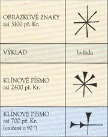
|
Písaři a knihovny
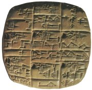
Většina hliněných tabulek popsaných klínovým písmem nezachycuje literární díla, ale hospodářské záznamy. Tato destička obsahuje potvrzení o dodání oslů rolníkovi, kováři a koželuhovi.
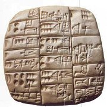
Tabulka s číslicemi
|
Písaři a knihovny
V 7. stol. př.n.l. se stává novým centrem Asýrie město Ninive. V 19. století zde byla objevena knihovna krále Aššurbanipala (668-630 př.n.l.), jejíž obsah se dnes nachází v londýnském Britském muzeu. Tato knihovna skrývala 20 tisíc hliněných tabulek nebo jejich částí, na kterých je zachycena řada mezopotamských skladeb, včetně Eposu o Gilgamešovi. Našly se zde i sumersko-akkadské slovníky a další texty právní a obchodní povahy. Centrem vzdělanosti ovšem nebyly mezopotamské knihovny, ale písařské školy nazývané sumersky edubba a akkadsky bít tuppi (dům tabulky). Zde se texty nejen opisovaly, ale také zde vznikaly. Většina autorů bohužel zůstává v anonymitě, protože dílo samo bylo mnohem důležitější než osobnost jeho tvůrce. Víme, že na konci eposu o Atrachasísovi byl podepsán písař Ku-Aja a přímo v textu Babylonské theodicey je ukryto jméno jejího autora, kterým byl kněz-zaklínač Saggil-kínam-ubbib (což by se dalo přeložit jako Esagilo, věrného očisti). Než byly důležité skladby zapsány, tradovaly se ústně, proto se také celé dlouhé pasáže v textu několikrát opakují. Jejich přednášení měli na starost pěvci (narúové), kteří je nemuseli umět úplně nazpaměť. Díky nim se zachovalo mnoho variant stejné skladby, které nebylo lehké sjednotit.
Další díla
Nářek nad zkázou města Uru
Sestup Inanny do podsvětí
Zpěv o motyce
Ovce a obilí
Hymnus na Ištaru
Babylonská theodicea
Chci chválit pána moudrosti
Otrok a jeho pán
|
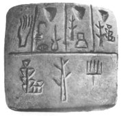
Hliněná destička s nejstarším sumerským obrázkovým písmem (4. tis. př.n.l.). Tři znaky v dolní části představovaly slova kněz, princ a velký.
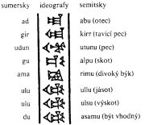
Slovník mezopotamských jazyků
|
Internetové stránky
Art of Mesopotamia, obrázky...
Umění Mezopotámie
Sárközi: Potopa světa v mytologiích různých starověkých civilizací
Exkurze
Britské muzeum, Londýn
Louvre, Paříž
Pergamon muzeum, Berlín
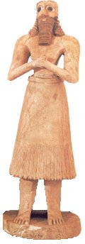
|
Doporučená četba
Balabán, Tydlitátová: Gilgameš, Mytické drama a hledání věčného života, Vyšehrad, Praha 2002
Bič, M.: Při řekách babylónských, Dějiny a kultura starověkých říší Předního Orientu, Praha 1990
Epos o Gilgamešovi, přel. L.Matouš, Mladá fronta, Praha 1976
Hruška, Blahoslav: Kultovní život starého Sumeru, Praha 1995
Hruška, B.: Pod babylónskou věží, Praha 1987
Klíma, J.: Nejstarší zákony lidstva, Chamurappi a jeho předchůdci, Praha 1979
Klíma, J.: Zákony Asýrie a Chaldeje, Pokračovatelé Chamurappiho, Praha 1985
Klíma, J.: Společnost a kultura starověké Mezopotámie, Praha 1963
Kramer, S.N.: Historie začíná v Sumeru, Praha 1965
McCallová, Henrietta: Mezopotamské mýty, přel. I.Šmoldas, NLN, Praha 1998
Mýty staré Mezopotámie, Sumerská, akkadská a chetitská literatura na klínopisných tabulkách, přel. Hruška, Matouš, Prosecký, Součková, Odeon, Praha 1977
Nováková, Pecha, Rahman: Základy starobabylonštiny, Karolinum, Praha 2000
Prameny moudrosti, Mudroslovná literatura staré Mezopotámie, přel. J.Prosecký, Oikúmené, Praha 1995 (Babylónská theodicea, Chci chválit pána moudrosti, Otrok a jeho pán...)
Prosecký, Jiří: „Královské knihy" staré Mezopotámie, Praha 1995
Roaf, Michael: Svět Mezopotámie, přel. Pečírková, Prosecký, Hruška, Knižní klub, Praha 1998
Zamarovský, Vojtěch: Na počátku byl Sumer, Praha 1966
Zamarovský, V.: Za tajemstvím říše Chetitů, Praha 1964
|
Připrav si referát o některé z uvedených knih nebo internetových stránek.
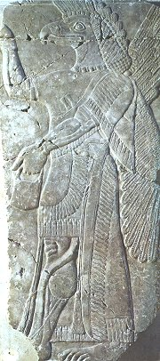
Okřídlený génius, asyrský reliéf
|
|